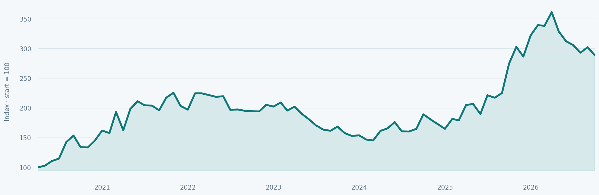

Bortom aktiemarknaden
AlgoLodges handelsmodeller har varit aktiva sedan 2019. Med trendföljande handel på flera marknader söker de möjligheter i både stigande och fallande priser – som ett komplement till traditionella investeringar.
Se modellernas verkliga handelshistorik, jämför risk och avkastning och utforska hur olika strategier kan kombineras.
Hot Commodities
Mars 2020 – september 2026

GRAFMALL · EJ STRATEGINS RESULTATVARFÖR ALGOLODGE?
En portfölj som klarar även de svåra perioderna.
Aktiemarknaden kan genomgå långa perioder av svag utveckling. AlgoLodges trendföljande modeller behöver inte stigande aktiekurser för att kunna skapa avkastning.
Att kombinera investeringar med olika drivkrafter kan minska beroendet av en enskild marknad – utan att ge något garanterat skydd mot förluster.
Läs varför investera utanför aktiemarknadenINVESTERINGSMODELLER
Sex modeller. Olika marknader.
Varje modell har sin egen marknadsinriktning, handels- och resultathistorik.
MODELLGUIDE
En modell eller flera?
Hot Commodities erbjuder en bred marknadsinriktning. Andra modeller kan komplettera med metaller, jordbruksråvaror eller digitala tillgångar. Genom att kombinera modeller får du möjlighet att följa trender på fler marknader, där utvecklingen kan skilja sig åt över tid.
Hitta din modellkombination ↗Utforska en bred marknadsinriktning.
Jämför modeller med olika marknader.
Följ utvecklingen på fler marknader.
SÅ FUNGERAR DET
Ditt konto. Våra handelsmodeller.
Du öppnar ett individuellt konto som ansluts till den handelsmodell du väljer.
Ta del av hur kontot öppnas, hur handeln följs upp och vilka risker som är viktiga att förstå.
Så fungerar det – steg för steg ↗
GRUNDARE OCH FÖRVALTARE
Henrik Hallenborg
Henrik Hallenborg har arbetat på internationella finans- och råvarumarknader sedan slutet av 1990-talet. Han grundade Börstjänaren och har sedan 2012 bedrivit CTA-förvaltning inom Managed Futures, bland annat genom individuellt förvaltade konton (Managed Accounts).
Henrik grundade AlgoLodge och ansvarar för utveckling och förvaltning av handelsmodellerna.
Läs mer om Henrik och AlgoLodge ↗AKTUELLT
Följ resultaten. Ställ dina frågor.
Ta del av månadsrapporter, onlinemöten och möjligheten att träffa förvaltaren personligen.